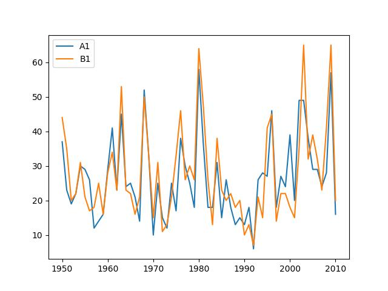
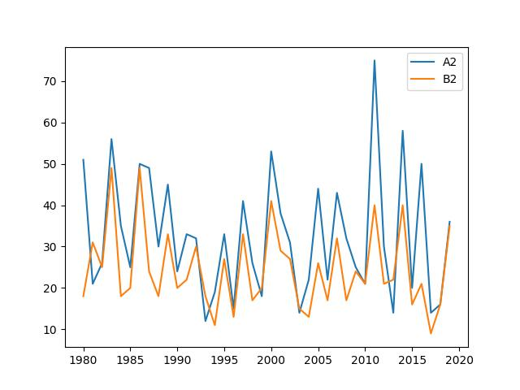
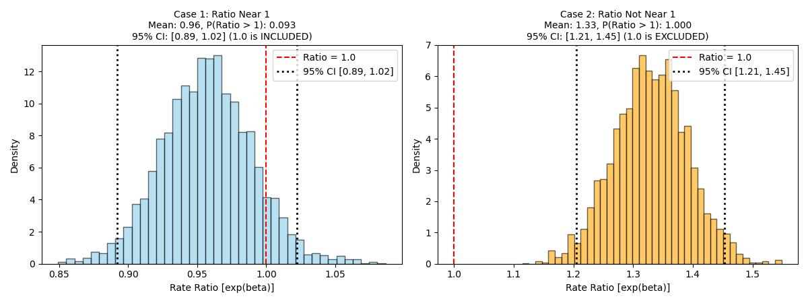

Daha önce istatistik testler konusunda gördük, bir dağılım varlığlığını test için o dağılımın analitik yoğunluk fonksiyonunu veriden gelen tahmin ediciler üzerinden tanımlayıp, veriyi bu fonksiyon ile üretmeyi deneyebiliriz, ve bu sonuç ile veri arasında uyumluluğa bakabiliriz.
Mesela olayların coğrafi olarak dağılımına bakalım.. Bu tür olayları nasıl modelleriz? Olaylar depremler, yangınlar, ya da bir savaşta bir alana atılan bombalar olabilir, ve bu tür sayılar Poisson dağılımı ile modellenir, dağılım,
\[ f(x) = P(X=x) = e^{-\lambda}\frac{\lambda^{x}}{x!} \]
olay sayısı \(x=1\), \(x=2\), vs.. olacak şekilde, ki önceden tanımlı belli bir zaman aralığında \(x\) tane olayın olma olasılığını bu yoğunluk veriyor. Coğrafi olay sayılarını ölçmek için biraz farklı düşünmek gerekiyor, mesela 2’inci Dünya Savaşı sırasında Almanların Londra’ya attıkları bombaları düşünelim, analizi [2]’de var; Merak edilen şuydu, acaba bombalar belli bir yerde kümeleniyor muydu (clustering)? Cevap önemli olabilirdi, belki özel bir yer vurulmak isteniyordu? Analizde olayların doğal oluş sayısını modelleyen Poisson varlığı ispatlanırsa, kümelenme hipotezi reddedilmiş olacaktı. İstatistikçi Clarke Londra’yı 536 tane ızgaraya böldü, ve her öğe içine düşen bombaları saydı. Bu bittikten sonra 1 tane bomba, 2 tane bomba, vs.. şeklinde olan hücrelerin sayısını aldı, ki yoğunluğa \(x\) ile geçilecek olan bu sayıydı.
Sonra Clarke yoğunluğu \(\lambda\) tahmin edici hücre sayısı bölü bomba sayısı üzerinden tanımladı, ve bu yoğunluktan tüm sayılar için bir tahmini bomba sayısı ürettirdi, sonuçları gerçek bomba sayıları ile karşılaştırdı.
N = 576.
lam = 537/N
d = N*np.exp(-lam)
probs = [d*1, d*lam, d*lam**2/2, d*(lam**3)/(3*2), d*(lam**4)/(4*3*2)]
list(map(lambda x: float(np.round(x,2)), probs))Out[1]: [226.74, 211.39, 98.54, 30.62, 7.14]Gerçek sayılar 229, 211, 93, 35, 7, .. idi, görüldüğü gibi oldukca yakın sayılar. Bir adım daha atılıp bunun üzerinde bir istatistik testi uygulanınca Poisson varlığı, ve dolaylı olarak kümelemenin olmadığı ispatlanmış oldu.
Üstteki örnekte tek bir Poisson dağılımı modellendi. Peki ya zamana yayılmış (sene bazında), ve bir A grubu ile bir diğer B grubunun sayım verisini karşılaştırmak isteseydik? Problem şu şekilde ortaya çıkabilir:
Ülke bazında spesifik bir olaya bağlı bir sayım verisine bakıyoruz, bu veri sene bazında toplanıyor. Bir veri mesela yıllık “dört yol kavşaklarında olan kaza sayısı” olabilir. Kavşaklar tabii ki ülkenin her tarafında, hepsine bakıp her sene için orada olan kazaları topluyoruz. Sonra diyelim ki bu kazaların normal (!) kazalardan daha yüksek / farklı olup olmadığını merak ediyoruz, o zaman diğer bir ölçüm sene bazlı dört yol kavşakları dışındaki kazalar olur.
O zaman elimizde iki zaman serisi olacak, her sene için iki tane ölçüm. Her ölçüm rakamının, bir sayım olduğu için, Poisson dağılımından geldiğini kabul edebiliriz. Fakat dikkat, her sene aynı Poisson dağılımından mı geliyor? Büyük ihtimalle hayır çünkü kaza sayılarında sene bazlı değişim olabilir: araç sayıları farklı olabilir, yol şartları değişmiş olabilir. Karşılaştırma mekanizmasının bunu hesaba katması gerekir.
Bir diğer problem ölçekleme (scaling) problemi olabilir, kavşaklar yolların ufak bir alanını temsil eder, kıyasla yolların tamamı fiziksel olarak daha fazla yer kaplar bu sebeple kavşak olmayan yol bölümünde olan kazaların sayıca daha fazla olması muhtemeldir. Bu fazlalık karşılaştırmayı yanıltabilir, elmalar ve armutları karşılaştırmış oluruz. Eğer elmalar ile elmaları karşılaştırmak istiyorsak kavşak dışındaki sayımları ölçekleyip diğer ölçüme skalasına yaklaştırmamız gerekir. Bu çok zor olmasa gerek, basit bir toplam ve bölme işlemi ile bunu başarabiliriz.
Verinin modeli ne olacak? Her sene farklı bir Poisson dağılımı olsun demiştik, ama bu dağılımların birbirine bazı yönlerden benzerlikleri de olmalı. Bir Poisson GLM (genel lineer model -generalized linear model-) yaratabiliriz, her iki zaman serisindeki her sene ölçümü farklı bir \(\lambda\) ile üretiliyor olabilir, parametrelerde kavşak için A diğeri için B dersek,
\[ \lambda_{A,t} = e^{\alpha + \beta + u_t} \]
\[ \lambda_{B,t} = e^{\alpha + u_t} \]
Üstteki parametreleri kullanarak \(y\) verisinin şu şekilde üretildiğini farz edebiliriz,
\[ y_{A,t} \sim Poisson(\lambda_{A,t}) \]
\[ y_{B,t} \sim Poisson(\lambda_{B,t}) \]
Denklemlerde \(\beta\) dolaylı olarak \(\lambda\) oranlarını hesaplayacak, dikkat edelim bir formülde var, diğerinde yok. Bunun sebebini birazdan göreceğiz. Peki niye üstel \(e\) kullanımı var? Eğer \(\log\) alsaydık mesela ilk denklem için
\[ \log(\lambda_{A,t}) = \alpha + \beta + u_t \]
elde ediyoruz, bu standart lineer regresyondan tanıdık bir format. Log bağlantının sebebi (ya da dolaylı \(e\) kullanımı)
\[ \lambda_{A,t} = e^{\alpha} \cdot e^{\beta} \cdot e^{u_t} \]
yapısına izin vermek / onu aktive etmek. Böylece \(\lambda\)’nin pozitif olmasını sağlıyoruz (çünkü Poisson oran \(\lambda\) pozitif olmalıdır), ayrıca oran hesapları çarpımsal parametreler içerdiği için bu varsayımı modele dahil etmiş oluyoruz. Tıpta bir ilaç uygulaması hastalık oranını katlayarak etkiler, hava kirliliği astim hastalığı oranını katlayarak arttırır, vb. Bu tür faraziyeler üstel hesap üzerinden formülasyona dahil edilmiş oldu.
Peki aradığımız oran \(\beta\) nasıl hesaplanacak? Bu hesap aslında dolaylı bir hesap. Biraz cebir ile \(\beta\)’nin neye eşit olduğunu görünce bunu anlayacağız, \(\beta\)’i bir eşitliğin sağında olacak şekilde bildiğimiz denklemleri düzenlersek,
\[ \lambda_{A,t} - \lambda_{B,t} = \alpha + \beta + u_t - (\alpha + u_t) \]
\[ = \alpha + \beta + u_t - \alpha - u_t = \beta \]
Yani,
\[ \lambda_{A,t} - \lambda_{B,t} = \beta \]
Eğer iki tarafın üstelini alırsak
\[ \frac{e^{A,t}}{e^{B,t}} = e^{\beta} \]
Yani \(\beta\) parametresi otomatik olarak A ve B farklı iki Poisson \(\lambda\) parametrelerinin oranını hesaplıyor! Dikkat bu hesabın yapılabilmesi için GLM’in spesifik bir oran hesabı yapması gerekli değil. Tek gereken GLM Poisson için gereken temel veri GLM regresyonuna, ya da Bayes MCMC hesabına verilirken, tüm verinin, yani A ve B birleşmiş olarak şu şekilde sunulması,
\[ \log(\lambda_{A,t}) = \alpha + \beta \cdot g_t + u_t \]
Tabii üsttekinin hemen ardından \(\lambda\) kullanılarak bir Poisson üretimi yapıldığını düşünüyoruz, geri yönde ise eldeki veri üzerinden MCMC ile sonsal -posterior- elde edip o dağılımdan örneklem alıyoruz, bunlar standart yaklaşımlar.
Konuya dönersek \(\beta \cdot g_t\) ifadesindeki \(g_t\)’ye dikkat, bu parametre A grup verisi için 1, B grup verisi için 0 diyecek. Yani bu formülasyonun doğal sonucu olarak elde ettiğimiz \(\beta\) iki \(\lambda\) parametresinin oranı haline gelecek. Her veri noktası \(\beta\)’yi kendi tarafına doğru çekmeye uğraşacak, bu al-ver itme-çekme arasında \(\beta\)’nin varacağı yer onun tüm zaman dilimleri için geçerli bir orana ulaşmasıdır.
Senesel farklar, eğer var ise, her sene için farklı olmasına izin verdiğimiz \(u_t\) ile olabilir, bu parametre ile o farklılığı “yakalayabiliyoruz”.
Matematiksel tanımlar şöyle oluyor, sayım verisi için bir GLM oluşturduk,
\[\log(\lambda_{i}) = \alpha + \beta \cdot \text{group}_i + u_{\text{year}[i]}\]
\[\lambda_i = \exp\left(\log(\lambda_{i})\right)\]
\[y_i \sim \text{Poisson}(\lambda_i)\]
ki,
Verinin nasıl oluşturulduğunu görelim,
def build_stacked_arrays(simdict):
years = np.array(simdict["years"])
A = np.array(simdict["A"])
B = np.array(simdict["B"])
n_years = len(years)
counts = np.concatenate([A, B])
group = np.concatenate([np.ones(n_years, dtype=int), np.zeros(n_years, dtype=int)])
year_idx = np.concatenate([np.arange(n_years), np.arange(n_years)])
return years, counts, group, year_idx
# Senaryo 1: Oran 1'e yakin
np.random.seed(333)
years1 = np.arange(1950, 2011)
T1 = len(years1)
u_t1 = np.random.normal(0, 0.4, size=T1)
alpha_true = 3.2
beta_true1 = 0.0
mu_B1 = np.exp(alpha_true + u_t1)
mu_A1 = np.exp(alpha_true + beta_true1 + u_t1)
A1 = np.random.poisson(mu_A1)
B1 = np.random.poisson(mu_B1)
sim1 = {"years": years1, "A": A1, "B": B1}
# Senaryo 2: Oran 1 yakininda degil (1.3 civari)
np.random.seed(42)
years2 = np.arange(1980, 2020)
T2 = len(years2)
u_t2 = np.random.normal(0, 0.4, size=T2)
beta_true2 = np.log(1.3)
mu_B2 = np.exp(alpha_true + u_t2)
mu_A2 = np.exp(alpha_true + beta_true2 + u_t2)
A2 = np.random.poisson(mu_A2)
B2 = np.random.poisson(mu_B2)
sim2 = {"years": years2, "A": A2, "B": B2}
years1, counts1, group1, year_idx1 = build_stacked_arrays(sim1)
print (group1)
years2, counts2, group2, year_idx2 = build_stacked_arrays(sim2)
print (group2)[1 1 1 1 1 1 1 1 1 1 1 1 1 1 1 1 1 1 1 1 1 1 1 1 1 1 1 1 1 1 1 1 1 1 1 1 1
1 1 1 1 1 1 1 1 1 1 1 1 1 1 1 1 1 1 1 1 1 1 1 1 0 0 0 0 0 0 0 0 0 0 0 0 0
0 0 0 0 0 0 0 0 0 0 0 0 0 0 0 0 0 0 0 0 0 0 0 0 0 0 0 0 0 0 0 0 0 0 0 0 0
0 0 0 0 0 0 0 0 0 0 0]
[1 1 1 1 1 1 1 1 1 1 1 1 1 1 1 1 1 1 1 1 1 1 1 1 1 1 1 1 1 1 1 1 1 1 1 1 1
1 1 1 0 0 0 0 0 0 0 0 0 0 0 0 0 0 0 0 0 0 0 0 0 0 0 0 0 0 0 0 0 0 0 0 0 0
0 0 0 0 0 0]Benzer olan zaman serileri
import pandas as pd
pd.DataFrame({"A1": A1, "B1": B1},index=years1).plot()
plt.savefig('stat_082_rapoi_01.jpg')
Benzer olmayan zaman serileri
pd.DataFrame({"A2": A2, "B2": B2},index=years2).plot()
plt.savefig('stat_082_rapoi_03.jpg')
Şimdi oranın sonsal dağılımını MCMC ile ortaya çıkartalım ve ondan örneklem alalım. Gereken fonksiyonlar,
from scipy.stats import norm, poisson
def log_posterior(params, counts, group, year_idx, n_years):
"""
params vektor icerigi, aranan parametreler beraber bu vektor icinde:
[alpha, beta, log_sigma_year, year_offset_0, year_offset_1, ...]
Not: log(sigma_year)'dan orneklem aliyoruz ki pozitif degerler almak garanti olsun
"""
alpha = params[0]
beta = params[1]
log_sigma = params[2]
sigma_year = np.exp(log_sigma)
year_offset = params[3:]
# Priors
log_p_alpha = norm.logpdf(alpha, 0.0, 2.0)
log_p_beta = norm.logpdf(beta, 0.0, 1.0)
# Half-Normal(1.0) prior for sigma_year with Jacobian adjustment for log-transform
if sigma_year <= 0:
return -np.inf
log_p_sigma = np.log(2.0) + norm.logpdf(sigma_year, 0.0, 1.0) + log_sigma
log_p_offsets = np.sum(norm.logpdf(year_offset, 0.0, 1.0))
# Likelihood
year_effect = year_offset * sigma_year
log_lambda = alpha + beta * group + year_effect[year_idx]
lam = np.exp(log_lambda)
log_lik = np.sum(poisson.logpmf(counts, lam))
return log_p_alpha + log_p_beta + log_p_sigma + log_p_offsets + log_lik
def run_metropolis(counts, group, year_idx, n_years, n_samples=20000, burn_in=10000):
n_params = 3 + n_years
# Initial state
current_params = np.zeros(n_params)
current_params[0] = 3.0 # alpha init
current_params[1] = 0.0 # beta init
current_params[2] = np.log(0.4) # log_sigma init
current_log_post = log_posterior(current_params, counts, group, year_idx, n_years)
# Adaptive proposal step sizes (tuned for stability across dimensions)
proposal_std = np.full(n_params, 0.02)
proposal_std[0] = 0.03 # alpha
proposal_std[1] = 0.02 # beta
proposal_std[2] = 0.03 # log_sigma
chain = np.zeros((n_samples, n_params))
accepted = 0
for i in range(n_samples):
# Propose step
proposal = current_params + np.random.normal(0, proposal_std, size=n_params)
prop_log_post = log_posterior(proposal, counts, group, year_idx, n_years)
# Metropolis acceptance probability
log_acc_ratio = prop_log_post - current_log_post
if np.log(np.random.uniform(0, 1)) < log_acc_ratio:
current_params = proposal
current_log_post = prop_log_post
accepted += 1
chain[i, :] = current_params
print(f"Acceptance rate: {accepted / n_samples:.2%}")
# Extract chains post burn-in
post_chain = chain[burn_in:]
beta_samples = post_chain[:, 1]
rate_ratio_samples = np.exp(beta_samples)
return rate_ratio_samplesSimülasyonları artık işletebiliriz,
rr_samples1 = run_metropolis(counts1, group1, year_idx1, len(years1))
rr_samples2 = run_metropolis(counts2, group2, year_idx2, len(years2))Acceptance rate: 38.36%
Acceptance rate: 46.71%fig, axes = plt.subplots(1, 2, figsize=(12, 4.5))
for ax, samples, title, color in zip(
axes,
[rr_samples1, rr_samples2],
["Case 1: Ratio Near 1", "Case 2: Ratio Not Near 1"],
["skyblue", "orange"]
):
mean_val = np.mean(samples)
prob_gt_1 = np.mean(samples > 1.0)
# Simple 95% Equal-Tailed Credible Interval using standard percentiles
ci_low, ci_high = np.percentile(samples, [2.5, 97.5])
# 1. Histogram
ax.hist(samples, bins=40, density=True, alpha=0.6, color=color, edgecolor='black')
# 2. Reference line for Ratio = 1.0
ax.axvline(1.0, color='red', linestyle='--', linewidth=1.5, label='Ratio = 1.0')
# 3. Two vertical lines for the 95% Credible Interval
ax.axvline(ci_low, color='black', linestyle=':', linewidth=2, label=f'95% CI [{ci_low:.2f}, {ci_high:.2f}]')
ax.axvline(ci_high, color='black', linestyle=':', linewidth=2)
contains_one = "INCLUDED" if (ci_low <= 1.0 <= ci_high) else "EXCLUDED"
ax.set_title(
f"{title}\nMean: {mean_val:.2f}, P(Ratio > 1): {prob_gt_1:.3f}\n"
f"95% CI: [{ci_low:.2f}, {ci_high:.2f}] (1.0 is {contains_one})",
fontsize=10
)
ax.set_xlabel("Rate Ratio [exp(beta)]")
ax.set_ylabel("Density")
ax.legend(loc='upper right')
plt.tight_layout()
plt.savefig('stat_082_rapoi_02.jpg')
Görüyoruz ki ilk simülasyonda oranın dağılımı 1 etrafında kümelenmiş, 1 değeri yüzde 95 güven aralığı içinde, o zaman iki sayım zaman serisinin birbirine yakın olduğuna karar verebiliriz çünkü oranları 1’e yakın. İkinci gruptaki zaman serileri birbirine yakın değiller. Sonsal dağılımın kümelendiği yer 1’den çok uzakta, yüzde 95 aralığının dışında.
Kaynaklar
[1] Bayramlı, İstatistik, Sayım, Poisson ve Negatif Binom Bazlı Genel Lineer Modelleri (GLM)
[2] Clarke, An application of the Poisson distribution, https://www.actuaries.org.uk/system/files/documents/pdf/0481.pdf